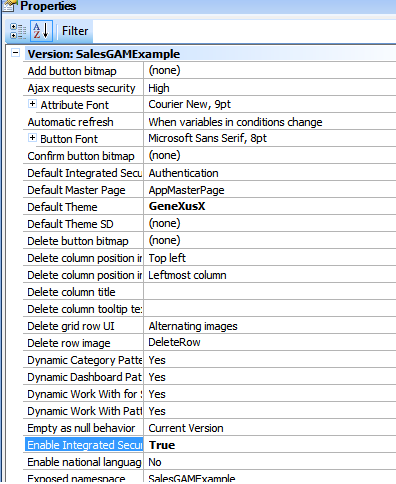
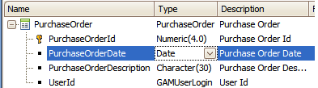
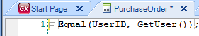
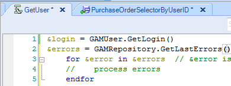
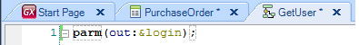
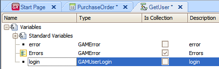
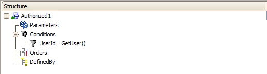
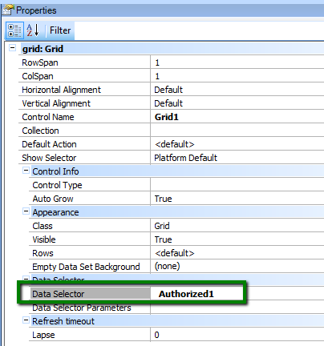

The following is a basic example of GAM API use. Imagine a scenario where distributors of an "X" company enter purchase orders in their smart devices. The security information (Users, User information, GAM Roles, GAM Security Policies, etc) is stored in the GAM Repository. A system requirement is that when the user navigates within the "Work With Smart Devices Purchase Orders", he has to access only the information entered by him and not the information entered by others. So we need to get the data of a specific user (the user who is logged in). How to solve it:1. Set Enable Integrated Security property = TRUE  image 1.2. The following is the transaction for our example:  image 2.The Transaction has an attribute named UserId, which is under the domain GAMUserLogin. This attribute is going to store the identification of the user who entered the purchase order to the System. There are several ways to reference the user id in GAM database : GAM API: How to reference GAM users. In this example, we are using the GETLogin method of GAMUser external object. In order to go on with the example, apply the "Work with for Smart Devices" Pattern to the transaction, create a Menu for Smart Devices object (GeneXus 16) and add the Work With "Purchase Orders" Smart Device instance as an element of it. 3. The salesman are requested their credentials when they enter the application in their Smart Devices. Check in the Dashboard object that Integrated Security Level Property = Authentication. 4. The user credentials have to be captured automatically when the user enters the information (the "Purchase Order"), so the User Identification can be saved. This is solved by programming the Equal rule in the PurchaseOrder transaction:  image 3.GetUser is a procedure. It has the following: Source: image 4,Rules: image 5.Variables: image 6.Notes:
After following the previous steps, the User current information will be retrieved and saved in the table when the user confirms the Purchase Order transaction. 5. When the user navigates within the "Work With Purchase Orders", he has to see only the information entered on his own. In order to achieve this behavior, one solution is to: a. Create a Data Selector object with the following code (note that "GetUser" is the procedure defined above):  image 7.b. Edit WorkWithDevicesPurchaseOrders object and configure the Data Selector filter, editing the grid Data Selector property in the section detail:  image 8.See Also
|
| Backlinks | |
| GAM Users | HowTo: Mapping Application Users to GAM Users |
| HowTo: Mapping Application Users to GAM Users - Using ExternalID GAMUser property |